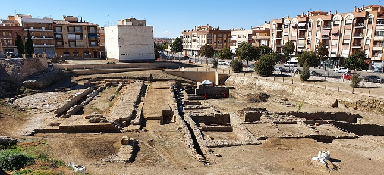
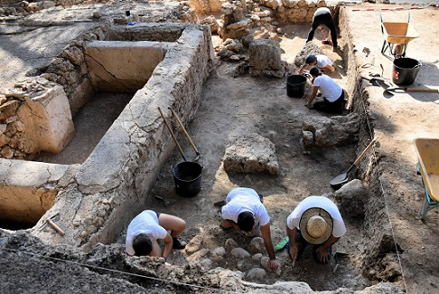

|
GRANADA ROMANA
ALMUÑECAR
VILLA ROMANA DE SALAR
ALHAMA DE GRANADA
Zona de aguas termales fue poblado desde el neolítico se encontraron
restos en las cuevas de la Mujer y del Agua. De época romana se conserva la
calzada, el puente y algunas villas excavadas recientemente.
BENAMAUREL
Además de los yacimientos arqueológicos en los acantilados de la Rambla
del Salar, en el campo de Silos se conserva un columbario romano con 317
hornacinas.
GUADIX
Habitado desde la Prehistoria. La antigua Colonia lulia Gemella Acci. En
2007 aparecieron los restos de un teatro romano del siglo I. Fue abandonado
en el siglo III. Objeto de sucesivas excavaciones que han permitido sacar a
la luz partes relevantes del escenario, la orquesta y las gradas. De época
romana también han aparecido en el municipio restos de la trama urbana,
parte de edificios monumentales, como termas, cloacas, casas e, incluso, los
posibles cimientos de un templo.

ALBOLOTE
Por Albolote pasaba la de la
calzada romana que partía de Iliberis. En su entorno y la depresión del
Cubillas se ubican los restos de al menos dos villas romanas que tenían su
fundamento en la explotación de la cantera de piedra del Cubillas y en la
explotación agrícola de la depresión. La Villa Romana Cortijo del Canal,
Villa del Cortijo Lapuente. Con una cronología del siglo I al III.
Foto: Alboloteinformacion.com

COLOMERA
Su nombre procede del término latino columbaria. El puente y la calzada
romanos de Colomera se encuentran en muy buen estado de conservación.
Situados fuera del núcleo urbano, se contemplan desde el lugar conocido como
Molino de la Puente.
IZNALLOZ
De origen íbero es la romana Acatucci. De época romana destaca el puente
del siglo I a.e.c que aún se utiliza y se una escultura romana del siglo III.
MONTEFRÍO
Poblado de los Castillejos, donde al parecer, se situó más tarde la
conocida Hiponova, a la que hacían referencia Plinio y Estrabón. Allí se han
encontrado monedas de la época romana y una acrópolis. El llamado puente
romano, construido sobre el arroyo de Milanos, a 1,5 km de la población
dirección Algarinejo.
LAS GABIAS
De época romana se han hallado los restos de un importante asentamiento
romano, del que se han descubierto las ruinas de un molino de aceite y
varias viviendas, pero lo único visible de esta etapa es el Baptisterio
Romano. Recientemente se han descubierto restos romanos en el anejo de Híjar.
También se conservan los restos de un nicho oculto procedente de una villa
romana. Este monumento subterráneo pertenece a la mitad del siglo II y
principios del siglo III. El baptisterio romano es otra de las
construcciones destacadas, ya que, al igual que el torreón, ha sido
declarado Monumento Nacional. Este criptopórtico data del siglo II o III.
MECINA BOMBARON
Mecina conserva intacto su puente romano del antiguo “Camino Real” que
unía Almería con Granada. Esta situado por debajo del puente moderno de
actual tránsito.
DURCAL
En Dúrcal se conservan las tegulae, una serie de monedas encontradas
casualmente en diversos puntos de Máhina, el Olivón, etc. Destacan la Villa
Romana de Los Lavaderos y la Villa Romana del Paraje o Pago de Las Fuentes.
ALGARINEJO
En septiembre de 2021, un grupo de arqueólogos de la Universidad de
Granada ha descubierto una ciudadela fortificada de hace unos 5.000 años en
el sitio prehistórico de Villavieja. Datado en la Edad del Cobre, cuando se
comenzaron a construir las primeras arquitecturas murarias de piedra que
delimitaron sus asentamientos. Se ha documentado la presencia de
contrafuertes que contribuyeron a su estabilidad y altura, actualmente con
más de tres metros de alzada conservados.
MONDUJAR
De época romana se conservan los restos de un acueducto y los restos de
unas termas, las Termas romanas de Feche.
MONTEJICAR
El Puente Romano de Montejícar (Puente Romano de Triana) se encuentra
sobre el río Guadahortuna. Formaba parte de una vía de la época que unía a
Montejícar con Jaén.
CUEVAS DEL CAMPO
Se conservan los estos de unos aljibes de época romana descubiertos en
el yacimiento arqueológico de Cuevas del Campo.
JAYENA
En esta localidad se conserva la antigua fundición romana.
GRANADA
La Ilíberis de los romanos. Los restos de época romana:
- En abril de 2013 se
ha hallado una villa romana del siglo I y una necrópolis visigoda en el
aparcamiento de los Mondragones. En febrero de 2018 descubren en los
Mondragones una terma romana del siglo III. Los últimos sondeos
arqueológicos confirman la existencia de edificios de gran entidad. Los
restos se localizan en los suelos reservados para un futuro espacio público
y forman parte de la villa que fue descubierta en 2013.
- Se reactiva las excavaciones en la villa romana del Zaidín, del siglo I.
La segunda fase en 2020, servirá para delimitar la extensión de los restos y
poder compaginar su conservación. Se localiza en la calle Primavera. En
febrero de 2020, finaliza la excavación en la villa romana de los Vergeles.
Destaca su ninfeo y mosaicos.
- En noviembre de 2017, las obras de restauración de la Muralla Zirí, han
desvelado la existencia de una antigua puerta del siglo XI en la muralla en
cuyo interior se construyó la ermita de San Cecilio, junto al Arco de las
Pesas. En el solar trasero de ese paño de muralla han aparecido, además,
restos de otras murallas y construcciones de la romana Florentia
Iliberritana y la antigua Granada íbera.
- En febrero de 2020, la excavación de la plaza Poeta Rafael Guillén destapa
una villa romana. Los trabajos arqueológicos han sacado a la luz una villa
romana de los siglos II a IV.
BAZA
La Ciudad ibero-romana de Basti se encuentra en el Cerro Cerero, a unos
3km de la ciudad. Destaca la Dama de Baza y el Guerrero de Baza (Cerro
Largo). De la antigua ciudad se conservan una parte de la muralla ibérica,
con dos bastiones y la necrópolis, una pequeña poterna, una domus romana, un
ninfeo, edificios públicos, las termas, un templo, y los aledaños del foro
de la ciudad, con un importante complejo de estructuras.
|